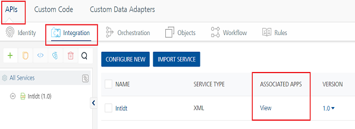
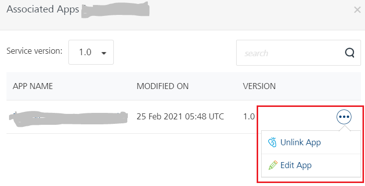

User Guide: How to Create an Identity Service in API Management > APIs
APIs- API Management
A Volt MX Foundry app comprises a group of services, shared and non-shared services. With API Management, you can manage (create, edit, and delete) shared services (identity, integration, orchestration, and objects) without linking or configuring them within an app. After configuring the services in the APIs page, you can edit, clone, view a sample code, and delete a service. When you create the services in the APIs page, the services are not linked to apps automatically. You can link the services across any apps created for that account in Volt MX Foundry Console. The APIspage also allows you to view the list of apps or services that are using or referencing a given service. When you make changes to the services in the APIs page, the changes will be reflected in the services associated with other apps.
Note: You can edit a service. When you make a change to the service, the changes will be reflected in the services associated with other apps.
You cannot delete a service if it is associated with an app or a service.
To create services through the APIs page, follow these steps:
-
In the Volt MX Foundry Console, in the left-pane, click the APIManagement tab to display the services tabs such as APIs, Custom Code, and Custom Data Adapters. By default the Identity service tab is selected under the APIs tab.

Under the APIs page, the Identity, Integration, Orchestration, and Objects tabs appear and display list the existing services (if any). Under the APIs, the Identity, Integration, Orchestration, and Objects views display the following columns:
Column Description NAME Displays the Name of the service. URL Displays the URL of the service.
Note: The URLcolumn is displayed only for identity service.ENDPOINT TYPE / SERVICETYPE Displays the type of the service. The TYPE column is displayed only for identity service.
Note: The SERVICETYPEcolumn is displayed only for the Integration service. And the ENDPOINT TYPE column is displayed only for the Objects service.ASSOCIATED APPS Displays the View hyperlink.When you click the View link, the system displays the Associated Apps page. The Associated Apps page displays the number of apps associated with a particular service. For more details, refer to Associated Apps MODIFIED BY Displays the name of the user. MODIFIED ON Displays the date and time of the modified service. -
From the APIs page, follow these steps to create services:
Identity Service
Volt MX Foundry identity services help you secure your application by adding an authentication layer.
How to Create an Identity Service in APIs
- In Volt MX Foundry Console, select APIManagement from the left navigation panel. The Identity page in the API tab appears by default. The Identity page appears and lists the existing identity services (if any). The fields for an identity service are displayed such as NAME, URL, TYPE, ASSOCIATED APPS, MODIFIED BY, and MODIFIED ON.
- Click CONFIGURE NEW. A new identity service is added.
- Configure the details for the identity service. For more details, refer to Identity.
Note:
- You can perform different actions on an existing service such as edit and delete. For more details, refer to Context Based Options.
- You can configure a default timeout for the apps globally in API Management. For more details, refer to Service Configuration > Identity Timeout Settings.
- Enabling cross-origin resource sharing (CORS) allows external web applications on domains to access the identity services in your Volt MX Foundry account. For more details, refer to Identity Service Security Settings.
Integration Service
An Integration Service is an application component that represents the application interaction with an external system or data source.
How to Create an Integration Service in APIs
- In Volt MX Foundry Console, select APIManagement from the left navigation panel.
- In the APIs page, click the Integration tab.
The Integration page appears and lists the existing integration services (if any). The fields for an integration service are displayed such as NAME, SERVICE TYPE, ASSOCIATED APPS, VERSION, MODIFIED BY, and MODIFIED ON. - Click CONFIGURE NEW. A service definition tab is added.
-
Configure the details for the integration service. For more details, refer to Integration.
Note: After creating an integration service in the APIs, you can perform different actions on an existing service such as edit, clone, view a sample code, delete all versions of a service, manage versions of a service, and export an integration service. For more details, refer to Context Based Options.
Services created under the APIs page are not linked to apps. You can link or unlink services to an app only through the Existing Services dialog while you are adding apps.
Orchestration Service
An Orchestration service leverages the concept of combining multiple integration services into a single orchestration service to reduce the complexity and number of calls from the app to the backend.
How to Create an Orchestration Service in APIs
- In Volt MX Foundry Console, select APIManagement from the left navigation panel.
- In the APIs page, click the Orchestration tab.
The Orchestration page appears and lists the existing orchestration services (if any). The fields for an orchestration service are displayed, such as NAME, ASSOCIATED APPS, VERSION, MODIFIED BY, and MODIFIED ON. - Click CONFIGURE NEW. A service definition tab is added.
-
Configure the details for the orchestration service. For more details, refer to Orchestration.
Note: After creating an orchestration service in the APIs, you can perform different actions on an existing service such as edit, clone, view a sample code, delete all versions of a service, manage versions of a service, and export an orchestration service. For more details, refer to Context Based Options.
Services created under the APIs page are not linked to apps. You can link or unlink services to an app only through the Existing Services dialog while you are adding apps.
Object Service
Volt MX Foundry Object Services enable model-driven application design and development by following a microservices architectural approach to create reusable components and link them to fit into your solution.
How to Create an Object Service in APIs
- In the APIs page, click the Objects tab.
The Objects page appears and lists the existing objects services (if any). The fields for an object service are displayed, such as NAME, ENDPOINT TYPE, VERSION, MODIFIED BY, and MODIFIED ON. - Click CONFIGURE NEW. A service definition tab is added.
-
Configure the details for the object service. For more details, refer to Objects.
Note: After creating an object service in the APIs, you can perform different actions on an existing service such as edit, clone, clone app data model, sample code, unlink an object service or delete a specific version of a service. For more details, refer to Context Based Options.
Services created under the APIs page are not linked to apps. You can link or unlink services to an app only through the Existing Services dialog while you are adding apps.
How to View Associated Apps in APIs
After you link services (identity, integration, orchestration, and objects) created in the APIs page, you can view the list of apps that are associated to the services through the Associated Apps page. From the Associated Apps page, you can edit the app and unlink the app from the service.
To view associated apps, follow these steps:
-
In the APIs page, click the service (identity, integration, orchestration, objects) tab to display the service details page.

-
Click the View link under the ASSOCIATEDAPPS column to view the apps associated to the service. The Associated Apps dialog appears with the list of apps linked to the service for the current version. You can change the version of the service if required.

From the Associated Apps page, you can perform operations such as edit the app and unlink the app from the service. For identity services, from the Associated Apps page you can also enable SSO for the application.
- To edit the app through the Associated Apps page, hover your cursor over the required service, click the Settings button, and then click Edit.
- To enable SSO for the app through the Associated Apps page, hover your cursor over the required service, click the Settings button, and then click Enable SSO. You must republish the app for this new setting to take effect. For more information about SSO for applications, refer to Application SSO.
- To unlink the app through the Associated Apps page, hover your cursor over the required service, click the Settings button, and then click Unlink app. When you click the Unlink app button, the app is disassociated from a particular service.
Context Based Options
You can perform various actions on an existing service from the APIManagement page.
In the APIManagement page, click the contextual menu of the required service. It contains the following options:
- Edit: Opens a service in the console and allows you to edit the service definition and operations. After you edit a service, you need to republish all the apps that are using the service to apply the changes.
Note: If a service is a part of a published app, you can rename that service only after the app is unpublished.
- Edit Configuration: For objects services, opens the service in the console and allows you to edit the objects service definition and operations.
- Clone: Duplicates an existing service. Clone a service to create a different version of the service. Changes made to a cloned service will not affect the original service. The name of a cloned service indicates that it is a copy of an existing service.
- Clone App Data Model: For objects services, duplicates an existing app data model of an objects service. Clone a service to create a different version of the service. Changes made to a cloned service will not affect the original service. The name of a cloned service indicates that it is a copy of an existing service.
- Publish Service: Republishes a service. Refer Publishing Individual Services
- Sample Code: Generates dynamic code for each SDK type based on the configuration of a service. You can use the code in your mobile app. For example, generate the sample code for an integration or orchestration service from Volt MX Foundry. Then use that code in the mobile app to invoke the orchestration service instance.
-
Delete all versions: Deletes all versions of a service. You cannot delete a version of the service that is in use. A service in use is a service that is referenced by a Volt MX Foundry app or another service or a Sync scope.
-
Click the Delete all versions button to display the Delete Service dialog.
-
Click DELETE. If the current of the service is not linked to any apps, the versions is deleted. Otherwise, the Error warns you that you are trying to delete the current version of the service that cannot be unlinked or deleted as it is being used by the following apps or services or Sync scopes: [App Name]
Note: If a service is a part of a published app, you can delete that service only after you unlink the service from all the published app.
-
Manage versions: Delete one or more versions of a service.
-
Click the Manage versions button to display the Manage versions dialog lists versions of the service.
- Hover your cursor over the required version, and click the Delete button. When you click the Delete button, the Delete Service dialog appears.
-
To confirm the deletion of the version, click DELETE. If the current version of the service is not linked to any apps, the versions is deleted. Otherwise, the Error warns you that you are trying to delete the current version of the service that cannot be unlinked or deleted as it is being used by the following apps or services or Sync scopes: [App Name]
Important: You cannot remove the current version of a service from a service level.
For example, If you are in the Service Definition tab of a service from APIs and try to delete a version of a service, you can delete all the versions of a service except the current version. -
Audit Logs helps you to capture all the user activities performed in a service. Object Name, Object Type and Modified On fields are prepopulated with the Service Name, Services, and Last 7 Days respectively.
For more information on Audit Logs, refer to Audit Logs documentation.
Note: This feature is applicable only for Integration, Orchestration, and Object Services.
- Console Access Control: Controls the access to the applications and services of apps.
- Export as XML: Exports an existing version of a service to an XML file.
- Export: Exports an existing version of a service to a zip file. You can import the service to an existing app in the Volt MX Foundry Console. For more information, refer Exporting and Importing an Application.
- Validate: Validates the service definition of an objects service.